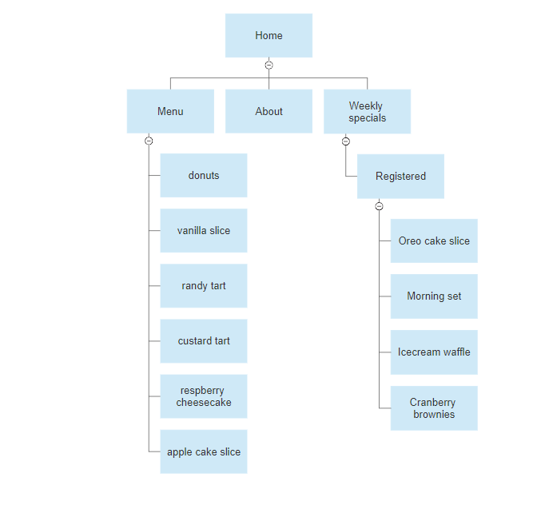
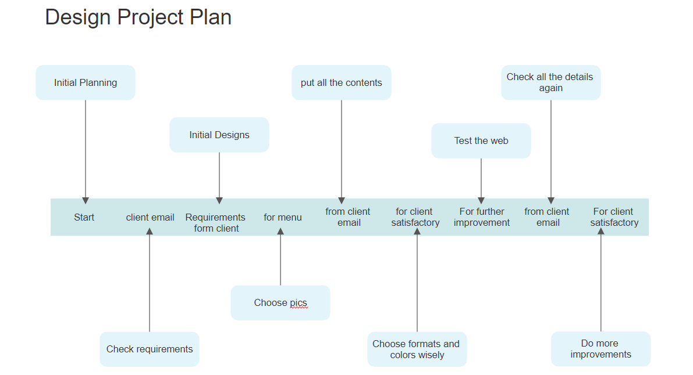
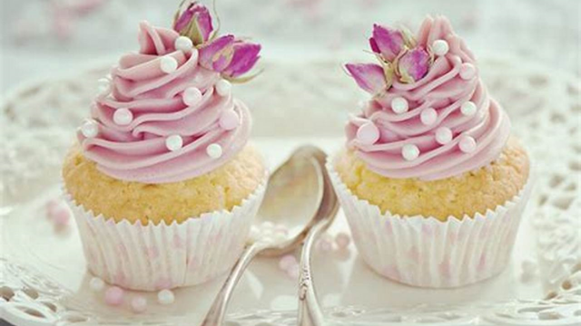
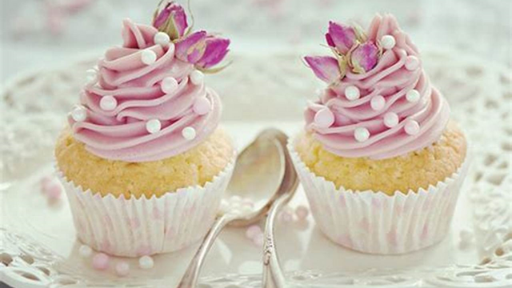

The main goal for this project is to advertise the client's bakery in order to increase the sales of the products as well as get more customers by signing up the weekly specials.
As the client want to increase their sale, and by looking at their request form, developing a web as he described won't be problem. Making the web according to the client's detail will not be having a doubt to have a successful website and getting more customers
The target audience is for every ages, especially the young and old ones, 17-35.


We are a small family-run local business, operating in Kirwan since 2012, hoping to improve our business by getting on the Internet. Our bakery is located at 123 Prize Lane in Kirwan, Queensland. We specialise in traditional Australian baked goods. We are currently in the process of getting some images created, so please just choose some ones for placeholders at the moment so we can see what it will look like. We have customers of all ages, however, we would like to attract young families and young people, possibly around the age of 17 – 35, to our bakery. From what we saw from other websites, we think we probably need 7 – 8 pages for our site with the following:
Navigation – Should use a horizontal navigation at the top. Links should be repeated in the footer.
Home page – should be very appealing and drive interest in our bakery. We also want to show some sample images of the products to be displayed to attract the site visitors’ attention. o We want our customers to be able to sign up for weekly specials! We think there should be a page for our weekly specials to further attract customers. o The home page should highlight these two customers comments: “Petite Treats has the best cheesecake I’ve ever had. Always fresh, and melts in the mouth. Would recommend highly!” “I’m addicted to the Danish pastries and always drop in here on my way to work.”
About me – bragging on our new bakery, great location near Willows Shopping Centre. Our baker is an artisan-baker and was trained in Paris. Some of our current customers are James Cook University, the Cowboys and Telstra.
Specials page This will have 3-4 items on special (25% off, in-store only, you pick the items!) Page should show pictures of the items and sales price
Footer information: o Contacts: 0455 5555 555 o Catering: 0433 3333 333 o Address: 123 Prize Lane, Kirwan, QLD


 



"Trebuchet MS", "Helvetica", Arial, Helvetica, sans-serif
These are the colors I'll be using on the web.
#7ad9ff
black
#ffffff
red
#ffdaf4
#f44336
#green
rgb(127, 236, 173)
#bdae99
#474e5d
#fefefe
#888
#f1f1f1